macOS（Mac OS X）
关于macOS系统笔者认为除了计算机相关或者工作需要的小部分同学外，剩下的大部分人还是对它不是很了解。估计这个不了解也是来源于macOS目前在全球市场份额太小的原因所致，因其高昂的价格挡住了非常多的人购买它的欲望。反观国内，说起Windows大家就一点都不陌生了，上个世纪首先打入国内个人电脑市场的操作系统就是Windows（DOS是最早进入中国市场，而不是进入国内个人电脑市场），毕竟先入为主的优势让很多人习惯了去使用Windows。习惯了Windows系统的操作习惯后，再去切换另外一个新的操作系统使用的话，这成本有点高，而且大家想想，Windows操作系统在上个时间80年代引入中国，那段时间能使用上个人电脑的现在都已经快四十岁了，快四十岁的人，如果不是从事计算机专业的相关工作，他已经很难去学习一种新的操作方式了（macOS和Windows的使用习惯上还确实是有很多不一样的地方），当然不可否认，也确实是因为有了Windows的授权安装在各种品牌的电脑上，才让全国甚至全世界快速的迈进了信息时代。
一.最早期Mac OS
1. System 1-6
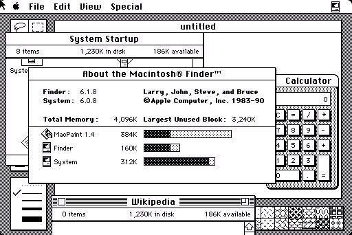
1984年的苹果发布了其第一台Mac个人电脑，与其一起发布的操作系统当时被简单的称为System Software，第一代System 1打破了字符终端的模式，最早使用图形界面和用户交互设计：基于窗口操作并使用了图标，鼠标可以在屏幕上进行移动，并可以通过拖拽来拷贝文件及文件夹。这让它成为图形界面设计的先驱，但后续直到System 7界面始终没有大改变。
2. System 7
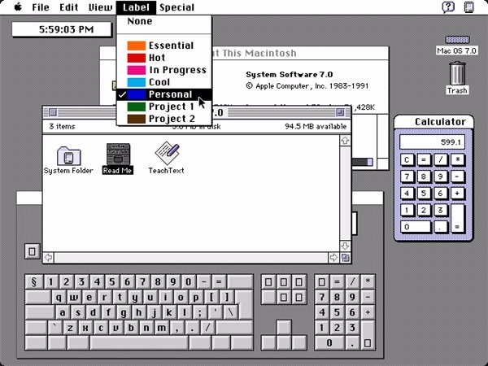
1991年的System 7开始引入彩色，图标也增加了隐约的灰色，蓝色和黄色阴影。但Mac OS整体界面却始终没有显著的变化。与此同时微软家的Windows从黑屏的DOS到全屏幕的Windows 1，再到成熟的Windows 3，最后演变到奠定当今Windows界面基础的炫丽多彩的Windows 95。用当时的眼光来看，这个变化是相当惊人的。而Mac OS因为因循守旧，在界面设计上从领先掉到了最后。
另外从System 7的7.6版本开始被苹果公司改名为Mac OS ，这一年是1997年。
3. Mac OS 8
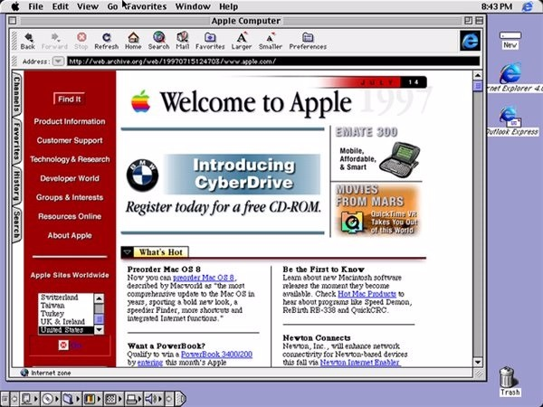
1997年，苹果发布的Mac OS 8开始加入更多的颜色，默认支持256色的图标，并较早的采用了等距风格图标，也称伪3D图标，但整体界面变化依旧不大。
二. NeXT附体
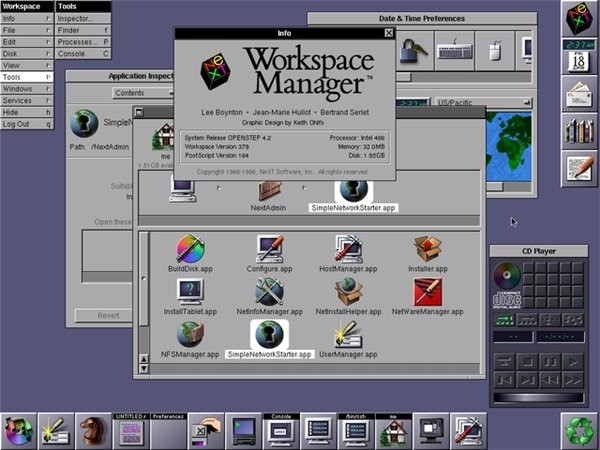
已经有十年历史的Mac OS已经遇到了瓶颈限制，为了让Mac OS现代化内部做了一番尝试和舍弃后，最后决定收购NeXT，因为不仅可以带来用户界面的变化，还可以使整个系统设计的全盘革新。
买完NeXT后，乔布斯回来了，“你们就是一群白痴！”他把所有团队的人叫到一个房间里以乔布斯风格把所有地方都骂了一遍，之后包括拉茨拉夫在内的设计师们的日子便越来越难熬了。
注：拉茨拉夫，当时Mac OS人机界面设计负责人
三. 过渡OS X
1. Rhapsody
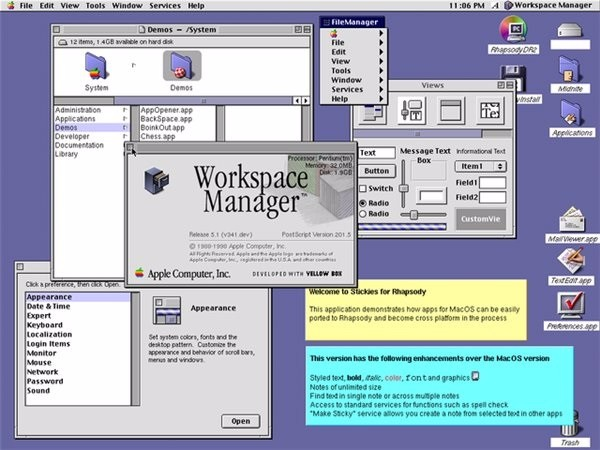
1997年苹果发布了过渡时代的Rhapsody，整合了Mac OS 8的外观与NeXT-based界面，它是介于NeXT以及Mac OS X之间的操作系统，也可以理解为是套了壳的NeXT操作系统。
而代号Rhapsody是依循苹果在1990年代以音乐名词作为操作系统代号的模式所命名的，其他代号包括Harmony (Mac OS 7.6)，Tempo (Mac OS 8)，Allegro (Mac OS 8.5)及Sonata (Mac OS 9)。
2. Mac OS 9
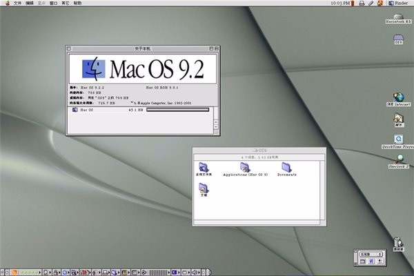
1999年发布，是乔布斯宣布过渡到Mac OS X阶段路线上最后一个Mac OS系列。
3. Mac OS X Server 1.0
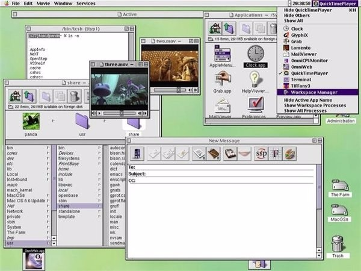
1999年3月苹果发布Mac OS X Server 1.0，即第一个版本的Mac OS X开发者预览版，它是苹果第一个真正基于NeXT的操作系统，和Rhapsody很像。
四. 早期Mac OS X
1. OS X公开测试版
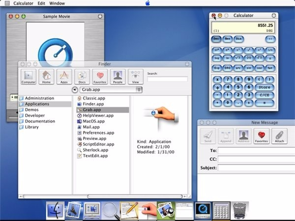
2000年9月发布，在这个版本中全新的用户界面Aqua初次亮相。另外它也是所有Mac OS中惟一一个将苹果菜单置于屏幕顶部中央的版本，这个修改因饱受用家诟病而在Mac OS X 10.0中被恢复。
注：Aqua是Mac OS X的GUI商标名称。
2.OS X 10.0 Cheetah猎豹
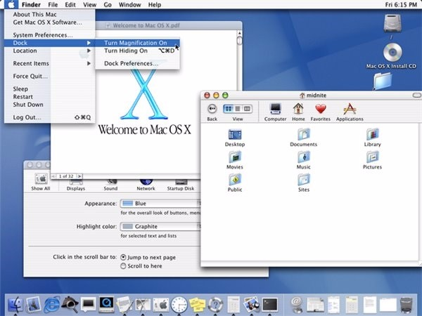
2001年3月，经历了四个开发者预览版和一个公共测试版之后的Aqua界面终于跟随10.0正式发布，发布后改变了人们对计算机界面的印象，在随后的10年里苹果一直沿用这套界面风格。
另外伴随Aqua一起来的还有苹果一整堪称经典的套拟物化的图标，也是一直基本持续沿用到现在，以及一个全新的方式组织Mac OS X应用程序的用户界面：Dock栏，以及组成Aqua界面的那些细节：菜单、按钮、进度条、滚动条等等，其中一根看似简单得不能再简单的滚动条，就耗费了苹果设计组整整六个月。这些都影响了整整一代图形界面设计者。
One more thing，从Mac OS X苹果开启了以猫科动物系列为代号的命名史。
3. OS X 10.1 Puma美洲狮
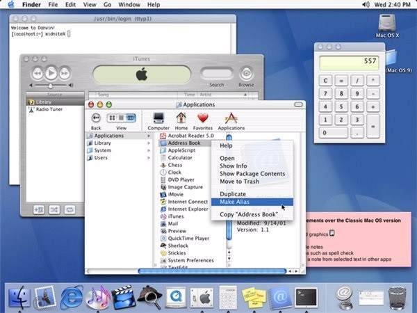
OS X 10.0半年后即2001年9月，苹果就推出了OS X 10.1美洲狮，没有新增太多功能，主要聚焦于改善系统表现。
4. OS X 10.2 Jaguar美洲豹
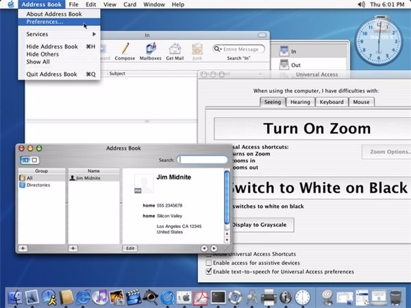
2002年8月发布，在这一版本中Aqua界面的装饰风格达到新高峰：窗口背景底纹，非活动窗口标题栏半透明、滚动条的抽空效果。另外也是从这个版本有了新的起始画面和新的苹果标志，过往Happy Mac的标志不再出现，取而代之的是如今那颗被偷咬了一口的苹果。
五. 进化Mac OS X
Aqua的衰退，这种变化事实上从OS X 10.3 Panther就开始了。
1. OS X 10.3 Panther黑豹
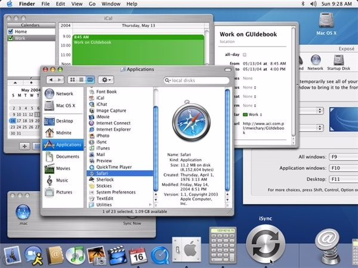
2003年10月发布，在这一版本Aqua界面引入了新的Brush风格，即金属拉丝质感，并在最常用的Finder上使用。
2. OS X 10.4 Tiger老虎
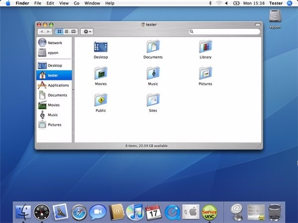
2005年4月发布，顶栏最右侧新增了一个蓝色的Spotlight搜索按钮。
3. OS X 10.5 Leopard豹
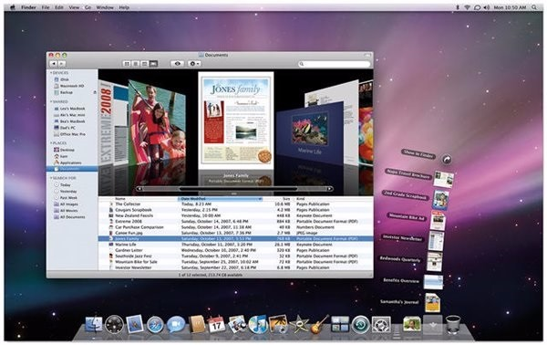
2007年10月发布，用户界面上改进幅度比较大的一个版本，虽然基本的界面仍为Aqua和其糖果滚动条，但新加入了一些铂灰色和蓝色，另外重新设计的3D Dock和更多的动画交互使得新界面看上去3D效果更强，此外还改进了Finder、半透明菜单条并新增了最初只用于iTunes的Cover Flow界面。
整体来说这一版本的界面相比之前有了翻天覆地的变化。
4. OS X 10.6 Snow Leopard雪豹
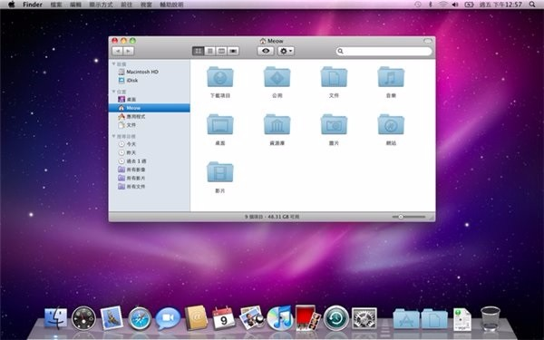
2009年8月发布，就像雪豹的名字，只比豹多了个雪字，它是以OS X 10.5的版本为基础跟进开发的，不过OS X 10.6还跑去向iOS偷师，引进了Mac App Store即应用商店。
六. 现代Mac OS X
1. OS X 10.7 Lion狮子
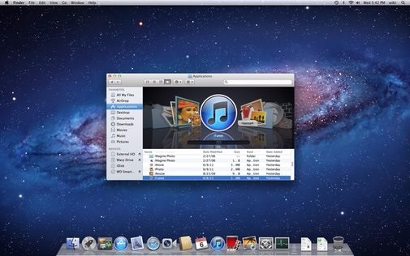
2011年7月发布，重新设计了Aqua GUI元素、按钮、进度条、滚动条（不使用时会自动隐藏）以及“滑动切换”的选项卡，全新设计了拟物化iCal界面，新的通信录和邮件应用都使用了类似iPad的界面。此外还引进了像iOS那样的应用启动器Lauchpad界面。
2. OS X 10.8 Mountain Lion美洲狮
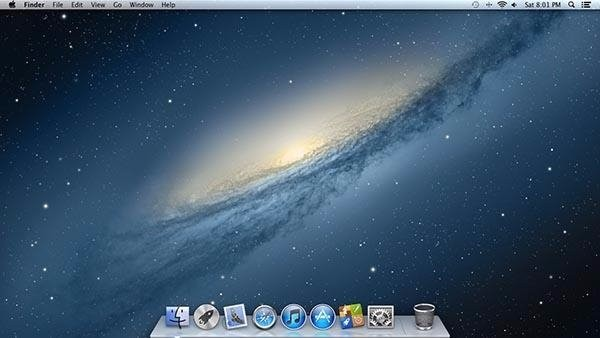
2012年7月发布，和Lion同样的的风格，更多类iPad及iOS的功能界面被引入（一些内置应用程序甚至被更名以与iOS保持一致），整体界面变化不大。
3. OS X 10.9 Mavericks
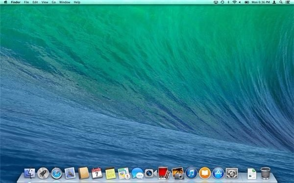
2013年10月发布，可以说是近期苹果的突破之作，界面上它看起来则更像是OS X 10.6的继承者，OS X 10.7和OS X 10.8里面的拟物化设计在OS X 10.9中被移除。
另外从这一版本苹果不再以动物命名Mac OS X，取而代之的是加州地名，如Mavericks就是加州某个冲浪景点。
4. OS X 10.10 Yosemite优胜美地
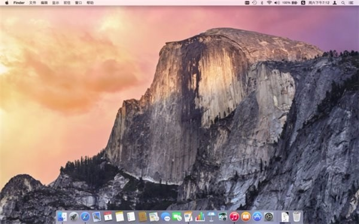
2014年10月发布，苹果历年来变化最大的操作系统，包括趋于扁平化的界面风格、类似iOS7的图标设计、半透明导航栏及全新字体设计等。
5、至今
在去年的WWDC大会上Mac OS X正式更名为macOS，同时也在当年的WWDC上把所有的平台的名字都变成了统一的风格。进入到macOS后界面上还是没有多大的变化，不过，比界面上的变化更大的变化那就是苹果把文件管理系统换成了APFS，升级成功后就多了好几个G。这不得不说是一个很大的进步，非常大的进步。
推荐一本关于macOS的书：Mac OS X背后的故事
以上内容部分来自网络